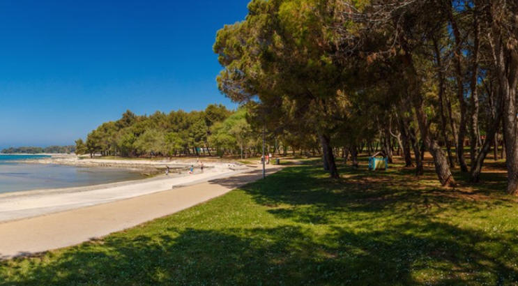

NEWS

Plava Laguna Croatia Open Umag
S tradicijom od 31 godina, međunarodni teniski turnir Plava Laguna Croatia Open Umag najstariji je teniski turnir u Hrvatskoj. More ...

Istražite ljepote sjeverozapadne Istre
Aquapark Istralandia je u 2018. godini prema ocjeni TripAdvisora, uvršten na 2. mjesto najboljih vodenih parkova u Europi. More ...
Gastronomija u Istri
Bez obzira na to u kojem dijelu godine doputujete, umjetnost istarskog kulinarstva i gastronomije otkrivat će vam se jednako snažno, strastveno i intenzivno More ...

Malo drugačiji odmor u Istri
Slijedite naše savjete u otkrivanju manje poznate strane Istre i obogatite svoj odmor mnoštvom novih, neuobičajenih doživljaja. More ...

Sea Star festival
Jedan od najpoznatijih glazbenih festivala na svijetu slijeće u Umag! More ...